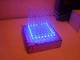
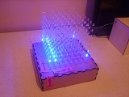
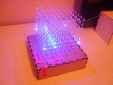
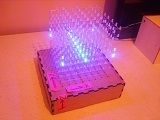
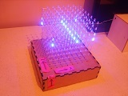
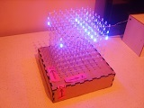
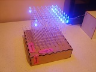
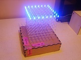

Vous n'êtes pas seuls dans l'Univers !

/
Le cube à LED - Aspect électronique
Aspect électronique du cube à LED.
1) Réalisation
{kind=link}
{kind=link}
{kind=link}
{kind=link}
{kind=link}
{kind=link}
Les schémas électroniques, les typons, et les codes sources sont présentés ci-dessous.
1-1) Version 1 - 2013
1-1-1) Schémas électroniques
Pilotage du cube à LED, version 1
L'alimentation électrique est construite à partir d'un régulateur linéaire 7805.
Afin de permettre le pilotage des 512 LED bleues du cube par un seul microcontrôleur de taille raisonnable, un multiplexage a été mis en place.
Ce principe se base sur la persistence rétinienne. Dans l'application présente, il consiste à n'allumer qu'un seul étage de 64 LED à la fois. Les 8 étages sont balayés à un rythme
suffisament rapide, ce qui donne l'impression qu'ils sont allumés en même temps.
Cette technique limite le nombre de broches nécessaires pour se connecter aux 512 LED à 64, pour les anodes et à 8, pour les cathodes, ce qui donne un total de 72 broches.
Toutes les anodes des LED appartenant à la même colonne sont reliées.
De même, toutes les cathodes des LED appartenant au même étage sont reliées.
|  |  |  |  |
| Phase 1 | Phase 2 | Phase 3 | Phase 4 |
|  |  |  |  |
| Phase 5 | Phase 6 | Phase 7 | Phase 8 |
{kind=link}
{kind=link}
{kind=link}
{kind=link}
{kind=link}
{kind=link}
{kind=link}
{kind=link}
{kind=link}
Ce nombre de broches est encore trop important pour commander le cube avec un microcontrôleur : en effet, il serait démesuré de vouloir utiliser un composant de ce type, avec autant de broches pouvant être utilisées simultanément en tant que sorties.
Une partie en logique câblée a permis de limiter
à 11 le nombre de broches de sorties requises pour le
pilotage de l'ensemble.
Ce bloc a été
réalisé en partie à l'aide de
circuits intégrés qui dormaient dans des tiroirs
depuis une vingtaine d'année : ils ont donc pu se bonifier
avec le temps.

Vous n'êtes pas obligé d'utiliser des circuits
millésime 1992 pour vous assurer d'un bon fonctionnement de
vos montages dès la mise sous tension !
Notez que, par ailleurs, la fabrication des LED bleues était encore
très difficile à ce moment-là !
Le rôle de cet ensemble en logique
câblée est de piloter les 64 colonnes de LED du
cube, et d'activer les 8 étages à tour de
rôle.
Le pilotage des colonnes est réparti sur 8 circuits
intégrés 74LS374. Ce sont des octuples bascules
D, avec possibilité de mettre à zéro
les sorties par l'application d'un niveau logique sur une broche
dédiée.
Un circuit intégré 74LS374 gère 8 colonnes de LED, soit une tranche du cube, parmi les 8 que ce dernier comporte.
{kind=link}
{kind=link}
{kind=link}
Le paragraphe suivant décrit les états logiques qui doivent être appliqués pour n'allumer que la LED située en bas, à gauche, sur la face avant du cube.
Cette LED se situe au croisement du premier étage du cube -
le rez-de-chaussée, en fait - et de la première
colonne de la première tranche.
Il faut tout d'abord sélectionner le premier
étage du cube, en reliant les cathodes des LED à
la masse.
Puis, il convient d'activer uniquement la première colonne
de LED de la première tranche du cube.
Pour ce faire, il faut que les 8 broches de sorties du premier
circuit intégré 74LS374 présentent la
combinaison logique « 00000001 », et que la broche
de validation des sorties soit mise à « 0
».
La LED concernée s'allume quand toutes ces conditions sont
réunies.
Deux compteurs décimaux, de référence CD4017, sont cascadés. Le premier compteur décimal s'occupe de valider les octets à destination des 8 circuits intégrés 74LS374 à tour de rôle, au fur et à mesure que le microcontrôleur PIC18F2610 les fournit et délivre une impulsion visant à incrémenter les compteurs. Le deuxième compteur décimal s'incrémente quand le premier repasse à zéro, et a pour rôle de sélectionner les étages les uns après les autres, une fois que le contenu des 64 colonnes d'un étage a été écrit par le microcontrôleur qui gère le cube. C'est pourquoi ses 8 sorties utilisées sont reliées aux 8 transistors chargés de commuter les cathodes à la masse. Ces transistors doivent donc être de type NPN, pour pouvoir commuter quand un « 1 » est présenté en entrée. Il doivent aussi pouvoir supporter, à répétition, le courant consommé par 64 LED bleues. C'est en effet le cas le plus défavorable à prévoir : celui où toutes les LED d'un étage sont allumées.
A propos du choix des circuits intégrés :
- Les 74LS374 peuvent être remplacés par des
74LS574. Il réalisent les même fonctions logiques,
mais ils ont, en plus, un brochage qui simplifie le routage.
D'autres familles de circuits intégrés, tels les
74ACT, ou les 74HCT, peuvent aussi être utilisées.
Cependant, il faut éviter de mélanger les
différents types, car ils ne peuvent pas débiter
le même courant de sortie, ce qui donnerait lieu à
des tranches de LED qui seraient plus lumineuses que les autres, en
impactant sur l'aspect visuel des animations lumineuses
effectuées par le cube.
- Il serait tout aussi possible d'utiliser deux compteurs octals
Cela éviterait d'avoir à câble le
dispositif de remise à zéro, qui s'active quand
la sortie numéro 9 passe à « 1
».
Les deux CD4017 pourraient donc être remplacés par
des CD4022.
Au moment de la fabrication, ce sont des 74LS374 qui étaient
présents
en nombre suffisant, ainsi que des CD4017, d'où ces
références
utilisées.
Le cube, muni de sa logique câblée, peut donc être piloté par 11 broches.
Cela permet un interfaçage avec de nombreux microcontrôleurs, FPGA, ou plate-formes de développement.
Ainsi, le cube à LED peut être piloté par un Arduino, une Raspberry Pi, une carte de développement STM32-DISCOVERY, une BASYS 2, une cafetière ou encore le port parallèle d'un ancien ordinateur ou d'un émulateur de ce type d'interface qui n'est plus vraiment utilisée.
Un microcontrôleur PIC18F2610 a été choisi.
Le tableau suivant précise les fonctions de ces 11 broches donnant accès à l'ensemble des LED, par l'intermédiaire de la partie en logique câblée.
| Numéro | Nom | Broche du PIC18F2610 | Fonction |
|---|---|---|---|
| 1 | D1 | RB0 | Données pour le groupe de colonnes 1, soit les LED de la face avant du cube |
| 2 | D2 | RB1 | Données pour le groupe de colonnes 2 |
| 3 | D3 | RB2 | Données pour le groupe de colonnes 3 |
| 4 | D4 | RB3 | Données pour le groupe de colonnes 4 |
| 5 | D5 | RB4 | Données pour le groupe de colonnes 5 |
| 6 | D6 | RB5 | Données pour le groupe de colonnes 6 |
| 7 | D7 | RB6 | Données pour le groupe de colonnes 7 |
| 8 | D8 | RB7 | Données pour le groupe de colonnes 8, soit les LED de la face arrière du cube |
| 9 | H | RC0 | Validation d'un nouvel octet de données pour le groupe de colonnes suivant |
| 10 | RAZ | RC1 | Remise à zéro des deux compteurs décimaux |
| 11 | AT | RC2 | Activation des sorties reliées aux tranches de l'étage courant |
Une modulation de l'intensité lumineuse du cube est possible, en modifiant les temps d'activation des sorties et de passage d'un étage à l'autre.
{kind=link}
{kind=link}
{kind=link}
{kind=link}
Réalisations des cartes électroniques du cube à LED, version 1
La réalisation des cartes, correspondants aux schémas électroniques présentés ci-dessus, a consisté à créer plusieurs modules.
Voici la liste de ces modules :
- 1 module principal, qui sert de « Fond de panier », embarquant, entre autres, l'alimentation, les deux compteurs décimaux, et des supports pour y raccorder les autres modules,
- 1 module de commande, accueillant le microcontrôleur,
- 8 modules de pilotage des colonnes, supportant chacun une octuple bascule D,
- 1 module de sélection des étages, sur lequel sont implantés les 8 transistors NPN qui relient les cathodes à la masse.
1-1-2) Typons
{kind=link}
{kind=link}
{kind=link}
{kind=link}

Le cube à LED, version 1 : Schémas électroniques
Logiciel de dession de schémas électroniques : EAGLE 6.4.0
Télécharger le fichierEffectuez un clic droit, puis sélectionnez l'option « Enregistrer la cible du lien sous... », pour télécharger le fichier (1.45 Mo)
1-1-3) Codes sources
Le cube à LED, version 1 : Fichiers C
Cible : PIC18F2610
Compilateur : MCC18
Télécharger le fichierEffectuez un clic droit, puis sélectionnez l'option « Enregistrer la cible du lien sous... », pour télécharger le fichier (118.82 Ko)
2) Sujets associés
La carte de commandes du cube à LED, version 1, intègre un microcontrôleur PIC18F2610 et une sonde de température I2C TMP100.
Commentaires (0)
Ajouter un commentaire